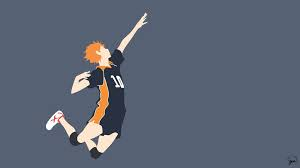

Engineering Notebook



8/19/2022
Today I carried Jason in league and became a yuumi main.:)
I have found out Top Jax is the easiest role.
8/22/22
Today I had all 7 of my classes and volleyball tryouts.
8/23/22
Today I tried out for boy's volleyball and played some league of legends.
8/24/22
Today I played some yuumi games and went to the last volleyball tryouts.
8/25/22
Today I got the volleyball tryout results and got onto the team.
8/26/22
Today I was lost during 7th period not knowing what to do.
8/30/22
Today I had my first volleyball practice with the CV team and it was super fun.
8/31/22
Today I first went to school then went back to CV to practice volleyball with my friends who are also on the team. I also learned how to use TinkerCad to 3D design some things. It is a basic but useful website.
9/1/22
I went to volleyball practice and it went great, but ultimately felt kinda short. When I play volleyball I feel like time flies right past me.
9/2/22
Today I went to volleyball practice and right after went to basketball practice. I am super excited for this weekend because I am going on a little vacation.
9/7/22
Last weekend for labor day weekend my family and I went to newport for a little staycation with some family friends.
9/12/22
Last week I had a great week at school with nothing going wrong except going down with a cold last weekend. It was super boring except being able to watch the NFL games. GO COMMANDERS!!
Week 1
I got to go visit my classes and get to know my teachers more. I wasn't in this class yet because my schedule wasn't switch up to this point yet.
Week 2
Still wasn't in this class, but in my other intro to engineering class I was able to learn about setting up my website and also got to put it online from github.
Week 3
I have officially joined this class and we did our first challenge day. It was with half pipes and with much teamwork. Teamwork was needed to have the marble ride through the pipes and eventually reach the end of the track. I believe that the team I was on was the first team to have the marble reach the end and into the bucket/container. Mainly was just fixing our website throughout the week. It was a small week because of labor day, back to school night, and minimum day on friday. This week I learned how to keep on updating my website and be able to keep on updating this website to turn in for future points.
Week 4
 We have started measuring and cutting out the cardboard for the Rude Goldburg challenge and we are a little behind, but the next day all we need to do is glue everything then we are done with the project. We have just cut out all of the parts needed for the project. I have learned to participate during these projects and learned to be supportive with my project team. We have decent chemistry and teamwork with some people doing less work than others but it is fine because those people chose to do more of the work. I beileve that we will be able to finish the project and get a decent score on it. We had some mistakes on measurements and cutting but we were able to fix these mistakes and push foward. On Friday, we had a challenge day and had to make paper boats float with a certain amount of weight. My team and I didn't get first, but didn't get last because some teams had their paper boats sink in the first couple seconds.
We have started measuring and cutting out the cardboard for the Rude Goldburg challenge and we are a little behind, but the next day all we need to do is glue everything then we are done with the project. We have just cut out all of the parts needed for the project. I have learned to participate during these projects and learned to be supportive with my project team. We have decent chemistry and teamwork with some people doing less work than others but it is fine because those people chose to do more of the work. I beileve that we will be able to finish the project and get a decent score on it. We had some mistakes on measurements and cutting but we were able to fix these mistakes and push foward. On Friday, we had a challenge day and had to make paper boats float with a certain amount of weight. My team and I didn't get first, but didn't get last because some teams had their paper boats sink in the first couple seconds.
 Week 5
This week we finished up the Rube Goldburg project. My team's design was more on the fancier design and it was hard to make it work because of the complications. Thus, leading to miscommunications and failures. We eventuallly succeeded and I felt like we did well for our project. This was a great project for us to learn how to work together and solve problems throughout the project. This is a great project for teenagers to do to learn special skills necessity for life. I learned how to work as a team, communicate well with my team, learn problem solving skills such as trying out new ways to make it work, and other skills. Another activity we did was visit the other Rube Goldberg projects in the other classrooms. This gave us an idea on what else was possible with others showing new ideas we never thought of such as using marbles. They used a marble roller coaster to start their project and ended in the same result. I wish I could have gone back and thought of different deisgns that could be better in efficency.
Week 5
This week we finished up the Rube Goldburg project. My team's design was more on the fancier design and it was hard to make it work because of the complications. Thus, leading to miscommunications and failures. We eventuallly succeeded and I felt like we did well for our project. This was a great project for us to learn how to work together and solve problems throughout the project. This is a great project for teenagers to do to learn special skills necessity for life. I learned how to work as a team, communicate well with my team, learn problem solving skills such as trying out new ways to make it work, and other skills. Another activity we did was visit the other Rube Goldberg projects in the other classrooms. This gave us an idea on what else was possible with others showing new ideas we never thought of such as using marbles. They used a marble roller coaster to start their project and ended in the same result. I wish I could have gone back and thought of different deisgns that could be better in efficency.
Week 6
This week we are starting Computer Engineering. We are going to first start off with taking apart and putting back together a dead computer. I am excited for this because I am looking forward to learning about this topic and I want to change my graphics card in my computer. This can help me with changing my graphics card from a gtx 1660 to a 2060 super. It took about 1-2 days to unassemble and reassemble the chromebook. This chromebook was a older model and had some old parts including some broken parts. The chromebook my partner and I had were missing some screws and parts but overall was a great experience. I was able to learn all about computer engineering and how to unassamble a computer.
Week 7
 This week we are doing bioengineering. Our first assignment is to create some type of prostetic limb for a animal. I chose a penguin's leg and foot. I learned all the complications and requirements for a penguins leg and foot. This leg and foot contain webbed feet and they are made up of plastic. On friday we were building pb and j sandwiches using exact instructions made by students. This was difficult for the builders because the instructions were to vague. Overall it was a great lesson from the teacher and it helps us to make better instructions for the future. The peanut and butter jelly sandwiches were poorly built due to the instructions. The instructions didn't specify to open the jars. Lastly, we had to research some engineering jobs and the paying per job. Most entry level engineering pay either hourly or 60-90k per year which is decent for entry level. I would like to pursue either analytical analysis or venture capitolist. Most engineering jobs are great and will make up some pool of jobs for new young people, but I feel like this isn't the field for me. The only engineering I would have in my pool of jobs would include either mechanical or computer engineer.
This week we are doing bioengineering. Our first assignment is to create some type of prostetic limb for a animal. I chose a penguin's leg and foot. I learned all the complications and requirements for a penguins leg and foot. This leg and foot contain webbed feet and they are made up of plastic. On friday we were building pb and j sandwiches using exact instructions made by students. This was difficult for the builders because the instructions were to vague. Overall it was a great lesson from the teacher and it helps us to make better instructions for the future. The peanut and butter jelly sandwiches were poorly built due to the instructions. The instructions didn't specify to open the jars. Lastly, we had to research some engineering jobs and the paying per job. Most entry level engineering pay either hourly or 60-90k per year which is decent for entry level. I would like to pursue either analytical analysis or venture capitolist. Most engineering jobs are great and will make up some pool of jobs for new young people, but I feel like this isn't the field for me. The only engineering I would have in my pool of jobs would include either mechanical or computer engineer.
Week 8
 This week we started aeroengineering. Aeroengineering includes engineering for rockets, airplanes, etc. Almost anything that goes into the atmosphere needs aeroengineering. Aeroengineering is a great job which I personally know someone in this field. He engineered a component on one of the NASA mars rovers that collected the sand/dirt. For the challenge day, we had to make paper fly from the second floor balcony into a bucket/trash can. No one made it in, but people were close to make these paper into the buckets. I was not close, but I felt like if I had some trials and more time to design I would be able to do something to make it closer to the trash can. I would have made the folds more crispy and less messy. Also I would have youtubed something to make a professional paper airplanes used in airplane competitions. I would not pursue a aerospace engineering job because it is not my favorite field of engineering. The only job I would really pursue for any job at NASA would be an analytical job to the satellites. Maybe analyze them to see if I could make anything better or just collect and analyze the data.
This week we started aeroengineering. Aeroengineering includes engineering for rockets, airplanes, etc. Almost anything that goes into the atmosphere needs aeroengineering. Aeroengineering is a great job which I personally know someone in this field. He engineered a component on one of the NASA mars rovers that collected the sand/dirt. For the challenge day, we had to make paper fly from the second floor balcony into a bucket/trash can. No one made it in, but people were close to make these paper into the buckets. I was not close, but I felt like if I had some trials and more time to design I would be able to do something to make it closer to the trash can. I would have made the folds more crispy and less messy. Also I would have youtubed something to make a professional paper airplanes used in airplane competitions. I would not pursue a aerospace engineering job because it is not my favorite field of engineering. The only job I would really pursue for any job at NASA would be an analytical job to the satellites. Maybe analyze them to see if I could make anything better or just collect and analyze the data.
Week 9
 This week we are still doing aeroengineering. We are making bottle rockets to launch up into the air and the goal is longest distance. So its about how far you go not how high you go. My team and I wen for a simple design with 4 fins and a cone nose. We believe that simpler is better. Thus, because of this philosphy we had a simple design. This design I believe will go far. We will be launching our rockets on Friday. Our rockets were launched into the air. We were able to choose how much water was in the bottle and we let it fly. My group's rocket did not go particularly far and we were basically unsuccessful. We have learned that we were unsuccessful because of the rough measurements and not everything was precise. Overall it was a great experience because it was my first time doing something like this and to be able to experience this was a great.
This week we are still doing aeroengineering. We are making bottle rockets to launch up into the air and the goal is longest distance. So its about how far you go not how high you go. My team and I wen for a simple design with 4 fins and a cone nose. We believe that simpler is better. Thus, because of this philosphy we had a simple design. This design I believe will go far. We will be launching our rockets on Friday. Our rockets were launched into the air. We were able to choose how much water was in the bottle and we let it fly. My group's rocket did not go particularly far and we were basically unsuccessful. We have learned that we were unsuccessful because of the rough measurements and not everything was precise. Overall it was a great experience because it was my first time doing something like this and to be able to experience this was a great.
Week 10
This week we are focusing on electrical engineering. We are learning about electrical engineering and the laws about it including the philosiphies. Electrical engineering is using watts, volts, current, resistance. Coding goes hand and hand with electrical engineering. On Thursday and Friday, we worked on breadboards and what parallel vs series are. I was able to understand what we were doing and I am excited to work with breadboards in real life. This is something I am considering, but throughout the weeks I have found two jobs that I may pursue. Data analytics for google and some jobs in the financial field. I still think that I may fit into the engineering pathway but I am only a freshman who still doesn't know what to do. I would rate breadboards and electrical engineering a 9/10.
Week 11
We are doing electrical engineering still. This week we will be focusing on series and parallel boards. Also, including Ohms law with all of the calculations and formulas needed to calculate certain things. We were able to tinkercad a breadboard making led lights light up from the flow of electricity. I had a tough time learning how to do the parallel series and what way the resistors go. On challenge day, we took a guess on how many candycorn could fit onto a single piece of paper without stacking onto each other. My group was the third closes with a guess of 226. The correct answer was 243 or something close to that. The environmental engineering was a great topic that I enjoyed also including electrical engineering. I found electrical engineering and computer engineering the most impactful on my career path choosing so far.
Week 12
 This week we focused solely on electrical engineering and the breadboards. We were able to make both types of breadboards, parallel and series. This was a great thing for me because this was one of the topics that I would like to have explored as a career path option. So far I have learned that electrical engineering is hard careert to go into for me personally as I found it hard to learn and understand some of the topics. I still do think electrical engineering could be career path designation for me. On challenge day we were asked a would you rather question and had to time to update our websites. The would you rather question was, "Would you rather, sit in a math class the whole year everyday 50 minutes, or count to 1 million". I personally chose sit in the math class because according to my calculations, it would take less time out of my life and I also could learn math and be able to get ahead in the math curriculum. It would take 150 hours to sit in the math class while for me it would take 277 hours to count to 1 million. I would rather sit in the math class.
This week we focused solely on electrical engineering and the breadboards. We were able to make both types of breadboards, parallel and series. This was a great thing for me because this was one of the topics that I would like to have explored as a career path option. So far I have learned that electrical engineering is hard careert to go into for me personally as I found it hard to learn and understand some of the topics. I still do think electrical engineering could be career path designation for me. On challenge day we were asked a would you rather question and had to time to update our websites. The would you rather question was, "Would you rather, sit in a math class the whole year everyday 50 minutes, or count to 1 million". I personally chose sit in the math class because according to my calculations, it would take less time out of my life and I also could learn math and be able to get ahead in the math curriculum. It would take 150 hours to sit in the math class while for me it would take 277 hours to count to 1 million. I would rather sit in the math class.
Week 13
This week we learned about electrical engineering and what come with it such as computer programming. The computer programming involves making a LED flash at certain times and when a button is pressed the led flashes on with a certain pattern according to the code. We had to go through many challenges set up by the teacher and we had to figure out what code would fit the pattern. I found it pretty easy to code due to my computer programming class so I knew all of the code necessary to complete the challenges. I would maybe consider electrical engineering for a career path, but I still am pursuing data analytics for now. For challenge day, we had a debate between if there are more doors or wheels in CV property. I was part of the wheel group and I felt like we had a solid argument. The judges eventually chose doors over wheels while the teacher chose wheels. I think that our argument kinda weak compared to the other team.
Week 14
Semester 2
Week 1
 Starting semester 2 did buisness engineering. We were tasked to make/pitch a new invention. This would just like the show shark tank. My team and I's invention was a diaper that would notify the parent the baby needs a new one. They would be notified through an app. I felt like the "sharks"/audience had no disagreements towards our invention except some few recommendations. A good recommentation that we recieved was a portable/reusable device instead of the either diaper. We seeked about 150000 dollars for 15% of our company. After buisness we went into chemical engineering. Chemical engineering including metals and toxins that we use in everyday life. I would not consider either of these engineering topics.
Starting semester 2 did buisness engineering. We were tasked to make/pitch a new invention. This would just like the show shark tank. My team and I's invention was a diaper that would notify the parent the baby needs a new one. They would be notified through an app. I felt like the "sharks"/audience had no disagreements towards our invention except some few recommendations. A good recommentation that we recieved was a portable/reusable device instead of the either diaper. We seeked about 150000 dollars for 15% of our company. After buisness we went into chemical engineering. Chemical engineering including metals and toxins that we use in everyday life. I would not consider either of these engineering topics.
Week 2
Starting week 2 we learning chemistry engineering and continued where we left off last week. We learned the fields of chemical engineering and what is involved with it. I learned the pay is good and it is a interesting topic to learn, but is very hard to concept. The activity we did was a chemical reaction between water(H2O) and starch. This was a simple but cool chemical reaction because in the pot is was soft and liquid. While on the other hand it was a hard substance you were able to hold. I like chemistry, but I am not sure if I would seek this engineering field.
Quarter 3 Engineering Project(MouseTrap Car)
Our project is the mousetrap car. This project consist of a mousetrap motoring the car moving foward. The car consist of a mousetrap, string, sticks, cardboard, and cds as wheels. We started off with 2 wheels and one big wheel to motor the car until we realized it wouldn't work. So I went and restarted the project when my partner was absent. This was a pretty simple and easy design to make in the 1 hour and 30 minute time span we had. It consisted of 4 wheels and a frame base of sticks. We had a problem with the stability of the car. The next day we worked on the back wheels of our car to further improve our stability of the car. This car goes around 15 or so tiles across the hallway. I think that this is an average distance for a group that had to switch our project.
I think we did a good job as a group together working together and communicating effectively. We redid the same design many times trying to perfect the same wheel. We ended up adding stability to the wheel and trying to end up having our wheels as straight as possible.
Our car is very skinny with an okay length amount of string. I don't think we going to win the competition, but I hope to get a decent grade. I think our car is going to be average among the competition. After the competition we did eventually end up average among the competition. We achieved our goals with only time to build throughout the project. We had flaws with the stability of our wheels but except for that I believe that our car was good. The idea of our car was to make it as light as possible with a small base and just make it go as far as possible. I believe we did achieve that.
Week Gutter Boat
This week our challenge day was to make a boat using specific materials and specific dimentions. The dimentinos were 7 cm wide and 14 cm long. It was a 4 person group project. We had about 20 minutes to design and build our project. Each member of the group was able to blow on the boat 2 times. So for 4 people thats around 8 blows total. Our project went about an estimate of 8 feet along the gutter path which was great compared to the other designs. I feel like we as a group communicated very effectively and efficiently.
Week 10 Egg drop design
This week we started our 2 week egg drop challenge. On the first week we brainstormed and sketched our idea. I saw a video on this exact project with a big youtuber doing this exact idea. He made a base where the egg is safely secured and a bunch of straws to absorb the impact. He dropped it from a bridge and the egg was perfectly fine. I took this idea and improvised to make it better adding balloons and a box instead of triangles to make it more secure. This idea I feel like will work to add onto an idea and make it better is a great way to start a buisness or also to start a new product. My group also contributed adding cotton balls to further soften the impact on the egg. I am very confident that we will be able to keep the egg intact.
Week 11 Egg drop test and robotics engineering video
We tested the egg drops designs. I was absent on this day, but according to my teammates we were unsuccessful in the challenge as our egg cracked. Our egg cracked due to our open space inside the box containing our egg and the lack of our cusion supporting our egg. This lack of design was very cruicial in our project as that is the one and only reason we had our egg crack. We believe that with a little more supplies and a little more time we could improve our design by adding a smaller space and more straws and cotton balls to cushion our egg. We also came up with the idea of adding balloons on the side of our design to make it descend at a slower pace. Also adding a garbage bag to the top of our design could have really helped us with the egg. On monday, we watched a robotics engineering video which described how many small parts together can do many amazing things. THe robot on desplay looked like a dinosaur's exoskeleton with many parts looking like bones.
Week 12 Cardboard boat challenge
This week we were challenged with a cardboard boat challenge. This challenge is going to be a 6 week challenge and a big portion of our grade. Our grade is mostly dependent on this project and we are able to have unlimited amount of cardboard with limited amount of tape and time. We were tasked to sketch and tinkercad our design. The design has to be able to fit 2 people sitting and still be able to float. It was stated that flotation was the main portion of our grade and we should be focusing on that so in response my sketch and design had multiple stacks of cardboard stacked on top of each other. With this the water is less likely to soak into the cardboard letting us float more. Also, adding a cardboard paddle will allow us to make the boat move. We made our design about 8 feet length and 6 feet wide. With these huge dimensions we would be able to fit two people in the boat comfortably. The other design we had in mind was walls that were tall enough to keep the water out but short enough to be able to paddle over. Additionally, adding a back wall was contemplated if it was needed or not. Finally we changed the front of our boat to an angled shape front so we could row and move through the water faster with still much flotation. We took inspiration from canoes made from industral companies who thrive from great boat builds. We first started with a small boat scaled down 1/4 and we put it together to see if our design would work at a bigger scale.
Week 13
This week we worked on our boat designs and further improving our designs. We worked on improving the precision of our boats and the getting the grasp of how big our boat was actually going to be. We scaled the boat up to the actual size and it was huge with many cardboard pieces needed. This was going to be big as it has to fight two people in. Friday, I had to work on website as I was having technical difficulties with my website and remaking the website as the website license expired for the school. We had to clone our old website into our new one and I didn't get an email to do so. Therefore, I was stuck on working on the boats only until I got it. Once I got it, it took me the whole day to finish the websites. My group made some progress on the precision of the boat design, but not much. We will be further improving our design so we get a good grade on our project.

Week 14
This week we worked on the prototype of our boat design. We scaled our boat down to 1/4th the size it would actually be. Thus, it should be able to hold four times the amount of weight if distributed correctly. We went with a lighter tape design and a more heavy cardboard design including multiple layers of cardboard as our base. This would prevent leaking and more floatation on our boat. On friday, we tested out this prototype and it held all the bricks possible. It held the maximum bricks avaliable which weighed around 25ish pounds give or take. Thus, if we were to scale it to full size, mathmatically it would hold a minimum of 100 pounds. That could potentially hold one person, but we had limited supplies. I feel like if we can adjust the weight distribution and add more cardboard on the bottom we will be able to float much better. Also distributing the weight of tape and cardboard could benefit us to holding more weight.
 Week 15
This week we worked on the final poject we have instore. This project will consist of only cardboard and tape hopefully holding two people in a pool. Our main focus is on the flotation of the boat which consist of many factors. These factors that can intrude on the flotation of our boat is weight distribution, weight of the boat, and the boat itself. If we were to add more weight on one side of the boat then, our boat will sink. If we were to add a even amount of weight on both sides(front and back) of the boat, then we can have our boat float well. We started with the limited cardboard we had and tried to make it into the best possible fit for our boat. For example, we had a cardboard piece that was small but thick. So, we decided that we could use that piece as a middle part of our base. Practically sandwiching it between two other pieces of cardboard. This will provide more floatation with no negatives to adding this piece. We will finish our project most likely in a week or so. I feel like we went at a fast pace and was able to complete the project relatively fast.
Week 15
This week we worked on the final poject we have instore. This project will consist of only cardboard and tape hopefully holding two people in a pool. Our main focus is on the flotation of the boat which consist of many factors. These factors that can intrude on the flotation of our boat is weight distribution, weight of the boat, and the boat itself. If we were to add more weight on one side of the boat then, our boat will sink. If we were to add a even amount of weight on both sides(front and back) of the boat, then we can have our boat float well. We started with the limited cardboard we had and tried to make it into the best possible fit for our boat. For example, we had a cardboard piece that was small but thick. So, we decided that we could use that piece as a middle part of our base. Practically sandwiching it between two other pieces of cardboard. This will provide more floatation with no negatives to adding this piece. We will finish our project most likely in a week or so. I feel like we went at a fast pace and was able to complete the project relatively fast.
Week 16
This week we worked on the final project again. We made almost the interior of the boat with single pieces of cardboard. Our plan is to later enhance our build by adding more cardboard to the base to have more flotation. For right now, we are just making the bases to then further improve the boat. We decided as a group to try and minimize our tape for now so we have enough to just have the boat intact. Then, we can add less important tape if we need for extra flotation and security. We believe that this plan is best for our boat design. We eventually want to add a 1-2 layer of tape at the bottom of our boat so the bottom does soak up and sink. We also made our handle/paddles to row the boat. We made ours short with a wide base to row as much water at a time as possible. We kept the handle short so we are more grounded to the boat and more secure to not tip the boat over.
Week 17
This week we worked on the final project again, but we also made some paper roller coasters. I had did a similar project last year in 8th grade. It was a semester project just like our cardboard boats. This time we have to make it in a less amount of time. We have to make everything from scratch. We had to restart many times as we didn't have an actual plan on how to build it. We just started building without a plan. We also finished the cardboard boat. With this we are able to work on the paper roller coaster solely.We are making decent progress but are struggling to finish the requirements needed.
Week 18
This week we worked on the final project and we finished our boat. We finished our boat and used all the tape possible. As a group, we all decided that this was the best possible solution to our tape usage and how we used our tape. This is the best as we feel confident it will float. I personally think we will be able to float for a while, but eventually sink as the water will soak through and sink our boat. For now we are confident. We also worked on our rollercoasters and adding to it as another project. My group is not going so far compared to the others as we can't get our loop correct. Overall, we are making good progress on both projects and will be testing our boat project in a week or two.